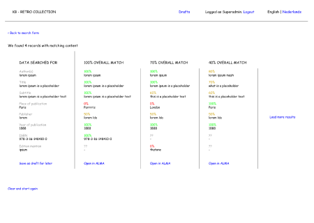
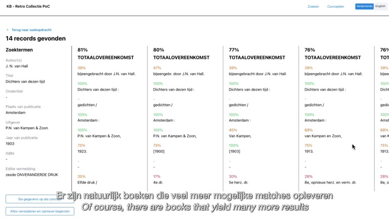
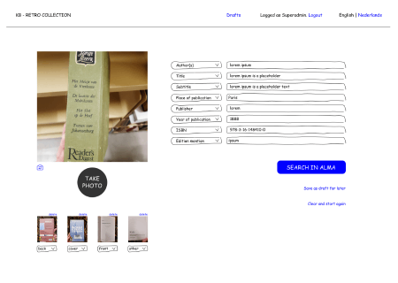
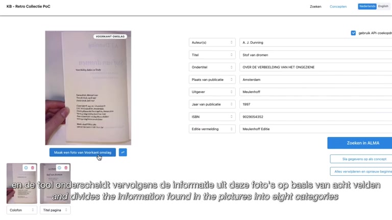
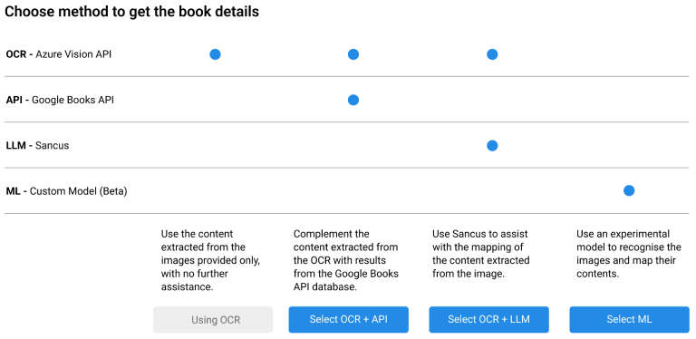

Cutting cataloguing time per book roughly in half for the National Library of the Netherlands.
Client
KB, National Library of the Netherlands
Agency
DEUS.AI
When
2023–2024
My role
Product Owner and lead product designer
Team
6-person Scrum team
The KB's own preview of the tool. A cataloguer walks through a real book, from the document camera to the match in Alma. Dutch with English subtitles, 3 minutes.
Context and role
The KB collects everything published in the Netherlands. It fills the gaps with donated and second-hand books, the "retro collection", and the backlog had grown past 50,000 books. Before a book can enter the collection, a cataloguer checks whether the KB already holds that edition in Alma, its cataloguing system, and if not, writes a basic description.
DEUS.AI built the RetroTool for the KB as a proof of concept that cataloguers tested on real books. I was the Product Owner for a 6-person Scrum team and led the product's UX and UI design.
I owned the backlog and the roadmap, with success metrics for each phase.
I ran contextual inquiries and interviews with cataloguers and mapped the manual workflow.
I designed the flows, the wireframes and the review screens.
I kept the KB's project manager and cataloguers involved in priorities and reviews.
The problem: 15 to 20 minutes a book
Each book took a cataloguer 15 to 20 minutes, and most of that went into three jobs:
searching Alma for duplicates, often several searches for one book;
typing title, author, publisher and year by hand;
writing a new record from scratch when the book was not there yet.
At that pace the backlog grew faster than the team could work through it, and hand-typed records varied in quality.
The manual workflow, as I mapped it with cataloguers. Red marks where the time went: repeated searches, manual comparison and records written from scratch. Select to open full size.
What research changed
I watched cataloguers at their desks, interviewed the most experienced ones about how they decide two books are the same edition, and mapped the process step by step. With engineering, we tested OCR services, large language models and a custom matching model on real title pages. We chose Azure Vision for OCR because it read old and unusual typography best.
We sawThe title page and the colophon hold almost everything a record needs.
So I designedCapture around two photos under a document camera. OCR fills eight fields that map one to one to Alma's fields.
We saw"Is this the same edition?" is a judgement made field by field.
So I designedSearch results with a match score for each field, not a single yes or no.
We sawNo single method read every book well. OCR alone missed context, and online sources had gaps.
So I designedA method choice: OCR only, OCR with Google Books, OCR with an LLM, or an experimental custom model.
We sawCataloguers would only rely on the tool if fixing its mistakes was faster than typing.
So I designedEditable fields before every search, drafts to finish later, and nothing written to Alma until a cataloguer confirms the match.
The assisted workflow. Photos go through OCR, AI proposes matches or a draft record, and the cataloguer reviews and corrects before anything reaches Alma.
Design decisions
Show why a record matches
The match screen lists every candidate record side by side, with an overall score on top and a score for each field underneath: author, title, subtitle, place, publisher, year, ISBN and edition. A 100% title next to a 40% year tells the cataloguer to check the edition before saying yes.
Trade-off: a denser screen than a single "match" answer. I kept it because the decision has to stay with the cataloguer, and the scores make it a quick one.

Wireframe. The first version of field-level scores.

Built. A book with 14 candidate records, each field scored and coloured.
Capture first, then search
A cataloguer places the book under the document camera and photographs the title page and colophon; covers and other pages are optional. OCR splits the text into eight fields, each tied to an Alma field. One checkbox adds details from data.bibliotheken.nl and Google Books. Then one large button searches Alma.
Trade-off: the cataloguer still reviews every field. I chose a short review over silent automation, because a wrong field means a wrong search.

Wireframe. Photo on the left, editable fields on the right.

Built. The colophon photo, the fields OCR filled, and Search in Alma.
Let cataloguers choose the method
For each book, cataloguers could pick how the details were filled: OCR only, OCR plus Google Books, OCR plus an LLM through Sancus AI, or a custom model in beta. It let us compare the methods on real books with expert users, and gave a fallback when one method failed on a hard book.
Trade-off: technical names in a tool for cataloguers. That was acceptable for expert users during the pilot; see the lessons below.

The method chooser. Each option says in one line what it adds.
The LLM option runs on Sancus AI, the document question-answering product I worked on at DEUS: a retrieval layer over a language model.
Roadmap and the targets I set
I planned delivery in three phases, each with its own success metrics, so "working" had a definition before we built anything.
Phase 1: core
Phase 2: refinement
Phase 3: scale
When
To Q2 2023
Q3 to Q4 2023
From Q1 2024
User stories
Photograph books and extract text; identify books in Alma from OCR data
Map data to Alma automatically; correct mapping errors easily; save drafts; suggest duplicates; draft title descriptions
Monitor the tool; support more book types and workflows; suggest extra fields
Key features
Image capture, OCR, Alma search, basic review and correction
Alma write and update, better mapping, drafts and barcode search, duplicate detection
Performance dashboard, configurable workflows, ML field suggestions, links to other systems
Success metrics
OCR accuracy above 85%; Alma identification above 70%; feedback on workflow efficiency
Less manual entry time; mapping accuracy above 90%; cataloguer satisfaction with error correction
Processing capacity; tool adoption; size of the feature request backlog
Results
40–50%less time per bookFrom 15–20 minutes to about 8–12.
98%accuracy in identifying duplicatesWhether a book was already in Alma.
25%more complete metadataCompared with hand-typed records.
500–700more books processed a monthAt 6–10 minutes saved per book, roughly 50–120 cataloguer hours a month.
18 monthsprojected saving on the KB's 2030 digital heritage roadmapA forecast for clearing the retro collection.
Figures as reported by the project team; the time saving is measured per book against the 15–20 minute baseline.
"This is already much faster than removing doubles from the retro collection by hand."
Lessons
Show the evidence instead of asking for trust
Field-level scores let cataloguers check a match in seconds instead of taking the tool's word for it. That transparency is what made AI suggestions usable for expert users.
Name options by outcome, not by technology
"OCR + LLM" worked for a pilot with experts. For a wider rollout I would name the methods by what they give, such as "text from photos" or "add online sources", and pick a default.
What's next
The KB saw the tool spreading to other cataloguing workflows, and video capture could speed up intake and quality checks further.